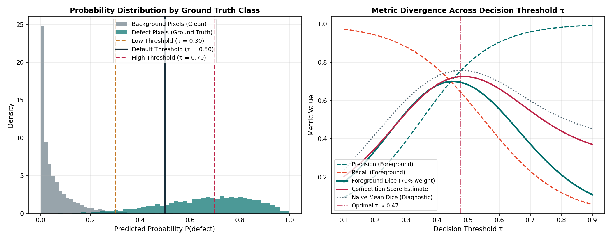
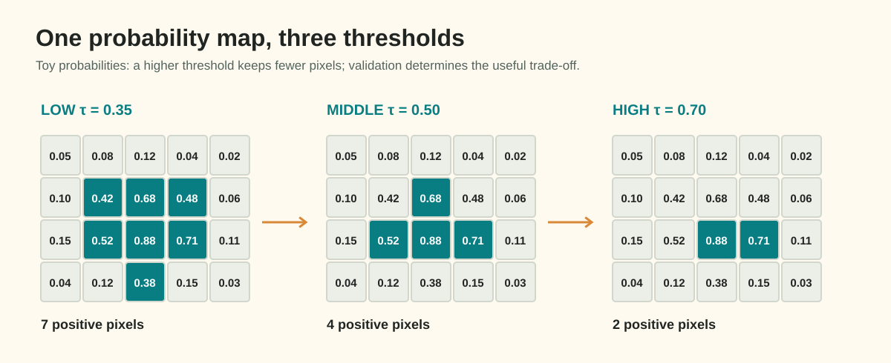

Guide 01: Probability Maps to Binary Masks: Calibration & Class Thresholds
At the conclusion of neural network training, your segmentation model emits continuous, real-valued tensors known as logits:
Where \(B\) is batch size, \(C\) is the number of defect channels, \(H = 128\), and \(W = 800\).
However, downstream factory quality controllers and Kaggle's evaluation engine cannot score raw floating-point numbers. They require a discrete, binary decision at every pixel: Is pixel \((y, x)\) an active surface flaw, or is it clean metal?
Converting continuous predictions into discrete decisions is the first critical post-processing step. Applying an uncalibrated default threshold (such as \(\tau = 0.5\)) is rarely optimal. On an industrial inspection line, a single 2-pixel false alarm on an otherwise spotless sheet can drop an image-pair Dice score from \(1.0\) down to \(0.0\), while an overly timid threshold will erase faint longitudinal scratches.
In this guide, you will trace logits through model activations, understand the precision–recall trade-off across the threshold spectrum, formulate per-class threshold vectors \(\boldsymbol{\tau}\), and calibrate decisions strictly using held-out validation predictions against the competition's weighted evaluation metric.
1. Concrete Failure Case: The Uncalibrated Threshold Trap
Consider an industrial line-scan camera inspecting a fast-moving cold-rolled steel strip.
Suppose your model inspects a clean, defect-free strip (Ground Truth \(Y = \mathbf{0}\)). A minor fluctuation in surface illumination or oil sheen produces a weak logit spike \(z = +0.1\) over 4 neighboring pixels.
If you apply a naive low threshold \(\tau = 0.35\) (\(\sigma(z) \approx 0.52 \ge 0.35\)):
- Ground Truth: \(|Y| = 0\) pixels (Empty mask).
- Predicted Mask: \(|\hat{X}| = 4\) pixels.
- Ground Truth is empty, so Foreground Dice is not scored, but the model has fired a false alarm on a clean pair. The false-positive penalty is incurred, dropping the pair's score from \(1.0\) to \(0.0\).
Now consider the inverse failure case on a sheet with a faint, thin scratch (defect_a, Ground Truth \(|Y| = 80\text{ px}\)). Because the scratch is shallow, the model's confidence hovers around \(p \approx 0.42\). If you apply an aggressive default threshold \(\tau = 0.50\):
- Ground Truth: \(|Y| = 80\) pixels.
- Predicted Mask: \(|\hat{X}| = 0\) pixels (\(\text{since } 0.42 < 0.50\)).
-
Foreground Dice:
\[\text{Dice} = \frac{2 |\hat{X} \cap Y|}{|\hat{X}| + |Y|} = \frac{0}{0 + 80} = 0.0\]
The defect is entirely missed, destroying Foreground Dice (which commands \(70\%\) of the competition metric).
The default threshold \(\tau = 0.50\) assumes symmetric costs and calibrated probabilities. In industrial anomaly detection, neither assumption holds.
2. Mathematical Formulation: From Logits to Binary Decisions
The transformation pipeline from model activations to binary masks follows a deterministic mathematical flow:

Figure 1.1: (Left) Empirical probability distributions for clean background vs true defect pixels. (Right) Metric divergence across the threshold spectrum: notice how the competition score peak differs from naive mean Dice.Sigmoid vs. Softmax Head Mechanics
Depending on the output head architecture selected during training, continuous probabilities \(\hat{P}\) are computed differently:
A. Multi-Label Sigmoid Head (4 Output Channels)
When the model outputs 4 independent logits \(\mathbf{Z} \in \mathbb{R}^{4 \times 128 \times 800}\), each channel corresponds directly to a defect class (\(c \in \{0, 1, 2, 3\}\) for defect_a through defect_d). Probabilities are computed via the standard logistic sigmoid function:
Under this formulation, channels are mathematically independent: pixel \((y, x)\) can theoretically predict probabilities \(> 0.5\) for both defect_a and defect_c simultaneously.
B. 5-Way Categorical Softmax Head (5 Output Channels)
When the model outputs 5 logits representing [background, defect_a, defect_b, defect_c, defect_d], probabilities are normalized across channels at every pixel:
Where \(c = 0\) is background, and \(c \in \{1, 2, 3, 4\}\) correspond to the 4 defect classes. This structure enforces pixel exclusivity: increasing the probability of defect_a automatically decreases the probability of all other defects and background.
The Decision Rule
Given predicted probability \(\hat{P}(c, y, x) \in [0, 1]\) and class threshold \(\tau_c \in (0, 1)\):
For a 5-way softmax head, students may combine a categorical argmax filter with a foreground confidence threshold:
3. Worked Numerical Example: The Toy Grid

To observe how thresholding alters mask geometry, examine this fictional \(4 \times 5\) probability grid \(\hat{P}\) for a single defect channel near a strip boundary:
Row / Col Col 0 Col 1 Col 2 Col 3 Col 4
Row 0 [ 0.05 0.08 0.12 0.04 0.02 ]
Row 1 [ 0.10 0.42 0.68 0.48 0.06 ]
Row 2 [ 0.15 0.52 0.88 0.71 0.11 ]
Row 3 [ 0.04 0.12 0.38 0.15 0.03 ]Let us evaluate the resulting binary mask \(\hat{M}\) at three distinct thresholds: \(\tau = 0.35\), \(\tau = 0.50\), and \(\tau = 0.70\).
Threshold Evaluation Comparison
At τ = 0.35 (Permissive / High Recall):
[ 0 0 0 0 0 ]
[ 0 1 1 1 0 ] --> 7 active pixels: captures weak boundary pixels (0.42, 0.48, 0.38).
[ 0 1 1 1 0 ] High recall, but boundary expansion may add false positive pixels.
[ 0 0 1 0 0 ]
At τ = 0.50 (Standard Default):
[ 0 0 0 0 0 ]
[ 0 0 1 0 0 ] --> 4 active pixels: (Row 1, Col 2=0.68), (Row 2, Col 1=0.52), (Row 2, Col 2=0.88), (Row 2, Col 3=0.71).
[ 0 1 1 1 0 ] Boundary pixel (0.42) and tail pixel (0.38) are zeroed out.
[ 0 0 0 0 0 ]
At τ = 0.70 (Conservative / High Precision):
[ 0 0 0 0 0 ]
[ 0 0 0 0 0 ] --> 2 active pixels: only high-confidence core pixels (0.88, 0.71) survive.
[ 0 0 1 1 0 ] High specificity, but much of the labeled defect is missed.
[ 0 0 0 0 0 ]Worked Dice Calculation Against Ground Truth
Suppose the true defect mask \(Y\) consists of the 4 pixels:
Let us compute Foreground Dice for each threshold:
-
At \(\tau = 0.35\):
- Predicted \(|\hat{X}| = 7\).
- Intersection \(|\hat{X} \cap Y| = 4\) (all true pixels detected, plus 3 false positive pixels at \((1, 3)\), \((2, 3)\), and \((3, 2)\)).
\[\text{Dice}_{\tau=0.35} = \frac{2 \times 4}{7 + 4} = \frac{8}{11} \approx \mathbf{0.727}\] -
At \(\tau = 0.50\):
- Predicted \(|\hat{X}| = 4\): \(\{(1, 2), (2, 1), (2, 2), (2, 3)\}\).
- Intersection \(|\hat{X} \cap Y| = 3\) (missed \((1, 1)\), added false positive \((2, 3)\)).
\[\text{Dice}_{\tau=0.50} = \frac{2 \times 3}{4 + 4} = \frac{6}{8} = \mathbf{0.750}\] -
At \(\tau = 0.70\):
- Predicted \(|\hat{X}| = 2\): \(\{(2, 2), (2, 3)\}\).
- Intersection \(|\hat{X} \cap Y| = 1\) (only \((2, 2)\) matches).
\[\text{Dice}_{\tau=0.70} = \frac{2 \times 1}{2 + 4} = \frac{2}{6} = \mathbf{0.333}\]
On this toy defect, \(\tau = 0.50\) achieves the highest Dice (\(0.750\)). The lower threshold captures one more true boundary pixel, but it also adds enough false-positive area to reduce Dice. That balance must be measured on held-out data.
4. Tensor Shapes and Data Types
Trace the tensor transformations through every operation in the decision step:
| Stage | Variable Name | Shape | Data Type | Value Range | Memory for Batch \(B=16\) |
|---|---|---|---|---|---|
| Model Raw Output | logits |
(16, 4, 128, 800) |
torch.float32 |
\((-\infty, +\infty)\) | \(26.21\text{ MB}\) |
| Non-Linear Activation | probs |
(16, 4, 128, 800) |
torch.float32 |
\([0.0, 1.0]\) | \(26.21\text{ MB}\) |
| Canvas Rescaling (if scaled) | probs_native |
(16, 4, 128, 800) |
torch.float32 |
\([0.0, 1.0]\) | \(26.21\text{ MB}\) |
| Threshold Comparison | raw_mask |
(16, 4, 128, 800) |
torch.bool |
True / False |
\(6.55\text{ MB}\) |
| NumPy Representation | mask_uint8 |
(128, 800) |
np.uint8 |
\(\{0, 1\}\) | \(0.10\text{ MB / image-class}\) |
[!IMPORTANT] If your model forward pass uses a scaled input resolution (such as \(256 \times 1600\)), you must interpolate the continuous logits or probability maps back to the native industrial dimensions \((128, 800)\) before thresholding. Interpolating binary masks introduces jagged stair-stepping and boundary dilation artifacts.
5. Threshold Calibration Protocol: The Search Strategy
Never adjust thresholds using public leaderboard feedback. Public leaderboard feedback provides a single noisy number across an unknown subset of test data, leading directly to leaderboard overfitting.
Thresholds must be calibrated strictly using held-out validation predictions:
Step 1: Precompute Validation Probabilities
Do not rerun model forward passes for every candidate threshold! Evaluate your validation set once with your trained checkpoint, caching the predicted probability arrays:
Step 2: Define the Search Resolution
Define a discrete search grid for candidate thresholds:
Searching with a step size finer than \(0.02\) yields negligible metric differences and risks fitting validation noise.
Step 3: Optimize the True Metric Objective
Do not optimize for naive mean Dice across all images. In this competition, submissions are evaluated using a 3-part composite metric:
# Minimal validation sweep snippet
import numpy as np
def sweep_class_threshold(val_probs: np.ndarray, val_gts: np.ndarray, grid: list[float]) -> tuple[float, float]:
"""Find the threshold tau that maximizes the competition composite score for one defect class."""
best_score = -1.0
best_tau = 0.50
for tau in grid:
fg_dices = []
fp_penalties = []
empty_correct = 0
total_empty = 0
for p, y in zip(val_probs, val_gts):
m = (p >= tau).astype(np.uint8)
y_sum = y.sum()
m_sum = m.sum()
inter = (m * y).sum()
if y_sum > 0:
# Positive ground truth pair: evaluate foreground Dice
dice = (2.0 * inter) / (m_sum + y_sum)
fg_dices.append(dice)
else:
# Empty ground truth pair
total_empty += 1
if m_sum == 0:
empty_correct += 1
fp_penalties.append(1.0)
else:
fp_penalties.append(0.0)
mean_fg = float(np.mean(fg_dices)) if fg_dices else 0.0
mean_fp = float(np.mean(fp_penalties)) if fp_penalties else 1.0
empty_acc = float(empty_correct / total_empty) if total_empty > 0 else 1.0
comp_score = 0.70 * mean_fg + 0.20 * mean_fp + 0.10 * empty_acc
if comp_score > best_score:
best_score = comp_score
best_tau = tau
return best_tau, best_scorePer-Class vs. Global Shared Thresholds
Different defect classes exhibit vastly different prevalence and contrast:
defect_a: Thin scratches often benefit from moderate thresholds (\(\tau \approx 0.40 - 0.50\)) to maintain edge connectivity.defect_b: Extremely rare defect. Setting \(\tau\) too high risks erasing entire instances, dropping Foreground Dice to zero.defect_c: Dense, high-contrast oxide scale; models often achieve high confidence, supporting higher thresholds (\(\tau \approx 0.55 - 0.65\)) to suppress boundary noise.
Calibrate a 4-element threshold vector \(\boldsymbol{\tau} = [\tau_a, \tau_b, \tau_c, \tau_d]\) rather than enforcing a single global threshold.
6. Decision Analysis: Benefits, Costs, and Risks
| Strategy | Primary Benefit | Computational Cost | Underlying Assumption | Primary Risk / Failure Mode |
|---|---|---|---|---|
| Default \(\tau = 0.50\) Global | Zero tuning; simplest possible code. | None (\(O(1)\)). | Probabilities are well-calibrated; costs of FP and FN are equal. | Suboptimal on both thin faint defects and clean sheet false alarms. |
| Shared Tuned \(\tau\) | Simple 1D sweep; boosts validation metric by \(0.01 - 0.03\). | Low (sweep 10 values). | All 4 defect classes share similar confidence profiles. | Under-predicts rare defects or over-predicts noisy classes. |
| Per-Class Tuned \(\boldsymbol{\tau}\) (Recommended) | Tailors precision–recall balance to the physical morphology of each defect. | Moderate (sweep 10 values \(\times\) 4 classes). | Validation set has sufficient class support to prevent overfitting. | Overfitting validation holdout on extremely rare classes (e.g. defect_b). |
7. Diagnostic Checklist: Has Thresholding Helped?
When you complete your threshold search, evaluate these diagnostics before locking in your settings:
- Class-Wise Foreground Dice Breakdown: Did the optimal \(\tau\) increase Foreground Dice on positive pairs without collapsing recall on rare defects?
- False Positive Rate on Clean Strips: Check how many clean validation images predict active pixels at your chosen \(\tau\). If more than \(5\%\) of clean strips trigger detections, your threshold is too permissive.
- Distribution of Borderline Probabilities: Plot a histogram of predicted probabilities in the interval \([0.3, 0.7]\). If the model is confident, most values will lie near \(0.0\) and \(1.0\). A large mass between \(0.4\) and \(0.6\) indicates model uncertainty that post-processing alone cannot fix.
8. Ungraded Activity: Predict the Metric Impact
Review the following diagnostic output from a student's threshold sweep on defect_b:
Threshold τ Positive Pair Dice Clean Pair Accuracy False Alarms (px)
τ = 0.30 0.582 0.810 1,420
τ = 0.45 0.564 0.930 310
τ = 0.60 0.510 0.985 45
τ = 0.75 0.180 0.998 2Questions to consider:
- Why does Positive Pair Dice collapse so dramatically between \(\tau = 0.60\) and \(\tau = 0.75\)?
- Given that Foreground Dice commands \(70\%\) of the competition score while Empty Accuracy commands \(10\%\), which threshold would you hypothesize yields the highest composite score?
- What risk does the student run if they choose \(\tau = 0.75\) to maximize clean-pair accuracy?
(Hint: Verify that defect_b instances are sparse. If an entire defect instance fails to exceed 0.75, its Dice score becomes 0.0, dragging down the average across positive pairs.)
9. Authoritative Framework & Competition References
- Scikit-Learn Documentation: Precision-Recall and Threshold Tuning
- PyTorch Documentation:
torch.sigmoidandtorch.nn.functional.softmax - Kaggle Evaluation Overview: Industrial Surface Defect Detection Competition Evaluation Metric specification.